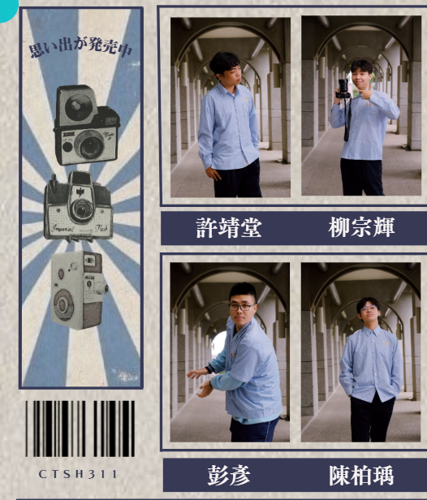

The Class Gazette
EDITORIAL / MEMORY ARCHIVE
「每個人都是自己故事裡的主角。」
在高中的畢業紀念冊設計中，我擔任班級的主設計。我以「報紙專欄」為核心概念，將每位同學的照片編排成獨立專欄，象徵每個人都有屬於自己的生命故事。 版面結構以藍白報紙風格為主，搭配細緻字體與分欄排版，營造懷舊感與故事性， 這次設計讓我學會在排版中結合文字敘事與視覺節奏，掌握整體構圖的一致性。

★ NEWSPAPER CONCEPT // 藍白報紙風格的設計，奠定整體懷舊基調。
★ THE STORY UNFOLDS // 動態翻閱錄影，呈現版面分欄排版與文字敘事的節奏感。
VIEW FULL
GAZETTE →
點擊連結查看完整畢業紀念冊版面